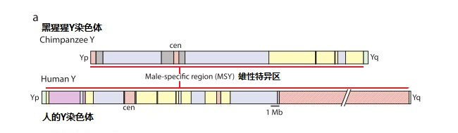

|
回主页
第8节 人和黑猩猩真的共祖吗？
有人说：DNA的研究更证明了进化论的正确，人和黑猩猩的基因有98.77%相同，证明了人和黑猩猩共祖。其实，这是一些十分错误的信息。人和黑猩猩的基因不是有98.77%相同，而是黑猩猩“有83% 的基因，与人的基因存在着差异”。
一．人和黑猩猩98.77%相似的结论是如何得来的？
1. 人类染色体中的基因和“垃圾DNA”
人类的基因组中，约有31亿个DNA的“碱基对”，在这些“碱基对”中，目前已发现约有3%左右数量的DNA具有“转录和编码生成蛋白质或酶”或“调节蛋白质合成”等功能。这样的DNA片段大约有2万多个，它们被称为基因。基因通过指导蛋白质的合成来表达自己所携带的遗传信息，从而控制着我们每个人生理以致外貌的发生，因此，它们具有生理遗传效应。位于基因之外的、大约97%数量的DNA，由于人们还没有认识它们的作用，“暂时”被称为“垃圾DNA”。但是，它们并不是废弃基因的墓场，而很可能是未被认识的宝藏。现在已经发现，许多分子人类学方面的遗传标记都是在这个区域，它们是人类血液中的历史档案。
2.人和黑猩猩相似度的片段比较方法
通过十几年来的努力，终于将人类的基因组DNA序列解析了出来，并被送入了电脑的资料库，免费供全世界人查阅。
但是，这个DNA序列实在是太大了。如果一个“碱基对”、例如“A-T”两个字符用一厘米见方的“马赛克”表达，31亿个DNA的“碱基对马赛克”总长度就有3万1千公里。如果将它们铺放在中等大小的足球场上，可以铺满60个足球场。黑猩猩的基因组要大一些，差不多可以铺满63个足球场。如果要比较这两组马赛克图的相似性，其困难程度可想而知了。
于是，人们设计了一个电脑程式来解决这个问题。最常用的软件叫“基于局部比对算法的搜索工具”，英文是“Basic Local Alignment Search Tool”、简称BLAST。也就是由电脑在“黑猩猩的DNA马赛克足球场”上，挑选一段长约300到500个DNA的字符串马赛克片段，然后，由BLAST电脑程式在“人的DNA马赛克足球场”上扫描匹配，按预定的误差标准、例如百分之一之内，进行比对。当在人的DNA序列中，找到了和这个字串基本相符的片段，就认为此串符合了。如果比较一万个字符串，符合的“碱基串”的字符总个数与全部一万个字符串字符数总和之比，就是目前人们常说的“人和黑猩猩DNA相似率”。
请注意，这是针对人类基因组全部DNA字符串“盲目”搜寻的结果，不是仅仅针对“基因的DNA序列”比较结果。因此只是“盲目”比较的“DNA小片段的相似率”，而不是基因的相似率。
3.人和黑猩猩DNA 98.77%相似的由来？
2002年1月，美国《科学》杂志刊登了一篇论文“人类与黑猩猩DNA序列的比较与分析”
[注释1]。这是由中国大陆、台湾、美国、德国、韩国和日本等国科学家组成的国际研究小组，在比较人和黑猩猩的DNA序列后，发现二者在DNA序列上的差别只占1.23%，即98.77%都是相同的。
这一结论在以后许多的研究中都加以引用，因此，我们必须看一下这个结果是怎样得来的：
他们在黑猩猩基因库中，取得了64,116个DNA的片段，每个片段约300个碱基，在出错概率千分之一的质量控制的标准下，与人类的基因库的DNA序列进行对比，结果有19,813,086个位点通过了比对，其中有19,568,394个位点（sites）是相同的。由此得到相似率：19568394/19813086=98.77%。
他们使用的比对方法简称是“NCBI-BLAST”。NCBI是National Center for Biotechnology Information，即“美国国家生物技术信息中心库”，BLAST即前面所说的“基于局部比对算法的搜索工具”。也就是用BLAST方法，将一些黑猩猩DNA片段，去到NCBI中搜索比对得出的结果。其它很多类似的研究报告，采用的都是同样的研究方法，得出的数据也十分类似，大都在98.6%左右。
这个98.77%相似率，是DNA相似率，是以“每个片段约300个碱基”条件下的比较结果。由于比较的片段很短，其意义是有限定的。另外，由于DNA中，基因所占DNA总量的比例很小，这个比例并不能说成是：人类与黑猩猩基因有98.77%相似。只能说是从基因组或DNA，用BLAST方法得出的相似度数据。
在这个报告摘要中，有一个内容没有引起人们的注意，它说：
“We detected candidate
positions, including two clusters on human chromosome 21 that suggest
large, nonrandom regions of difference between the two genomes.”
“在我们检测选定的位置里，包含了在人类21号染色体上面的两个基因簇，表明在人类和黑猩猩两个基因组之间，有着大差异的非随机选择区域。”
在以往大量引用“98.77%相似”的时候，却几乎没有人提及这一部分的内容。
二．是谁证明了人和黑猩猩是共祖的？
1. 是谁用科学的方法，证明了人和黑猩猩是共祖的？
我们对这个问题进行了追寻，结论是谁也没有从科学上拿出证据，证明了人和黑猩猩是共祖的。
让我们来看一看“人和黑猩猩是共祖”结论产生的过程：
（1）非洲的大猿是古老世界的猴类进化来的，“人类与非洲的大猿是分享着‘最近的共同祖先’”（More
than a century ago Darwin1 and Huxley posited that humans share recent
common ancestors with the African great apes.[注释 6]）。提出这个假设的，是一百多年前的老达尔文和赫胥黎，他当然没有证明过。
（2）一百年后的1967年，加州大学伯克利分校的威尔逊教授（Allan
Wilson）（那位线粒体夏娃发现者之一）和他的学生发
表了一篇论文，Immunological Time Scale for
Hominid Evolution[注释2]。
在论文中，介绍他们对动物蛋白质研究对比，发现“猿和人的血清白蛋白之间极为密切的免疫相似” （there is an
extremely close immunological resemblance between the serum albumins of
apes and man.）。
并认为“白蛋白分子以稳定的速度的演化”（indicates that the albumin molecule has evolved at a
steady rate.）
他们的结论是“如果人和古老世界的猴类，过去3千万年前拥有共同的祖先，那么人和非洲猿类500万年以前就拥有着共同的祖先”（if man and Old World monkeys last shared a
common ancestor 30 million years ago, then man and African apes shared a
common ancestor 5 million years ago,）
（3）1991年，美国鸟类学家查理斯和乔恩（Charles G.
Sibley and Jon E. Ahlquist.）出版了一本书，提出“DNA分子钟学说” （“DNA molecular clock"）。这个分子钟学的速度是：DNA大约每450万年变化1％。因为前面说的那个报告(“人类与黑猩猩DNA序列的比较与分析” )提出BLAST的分析结果，是“人和黑猩猩的的DNA差异是1.23%”。450万×1.23近似等于600万，于是人和黑猩猩600万年前共祖的说法，被肯定了下来。
通过上面的1、2、3进行混合嫁接，随后的新闻报道就变成：“到了1960年代，美国加州大学伯克利分校的生化学者，用分子生物学的方法证明：人与黑猩猩在600万年前拥有共同的祖先。”
于是，全世界都在说“600万年前，人与黑猩猩拥有共同的祖先。”
从前面的全部过程中，我们看不出谁应该为“人和黑猩猩600万年前共祖”的说法负责。达尔文不负有责任，因为他只是一个设想。威尔逊和他的学生也不会负责，因为他们有一个前提：“如果人和古老世界的猴类，过去3千万年前拥有共同的祖先”。关键在于这个“如果”，他们并不为这个“如果”负责。
更有意思的是德国人类进化研究所在报告中说：如果人类，黑猩猩的分离时间设置为650万年，尼安德特人和现代人分离时间就大约是7.93% × 650万年=51.6万年。这里又加了一个“如果”，他们的结论是建立在“如果”的“如果”之上。[注释3]
绝大多数人，都不知道有这么多的“如果”，他们所听到的只是“黑猩猩的分离时间为650万年（或600万年）”、“尼安德特人和现代人分离时间就大约是50多万年”。
对于第一个“如果”―― “如果人和古老世界的猿猴，过去3千万年前拥有共同的祖先”，有谁去追究这个前提呢？对于黑猩猩有24对染色体，人有23对染色体，这个鸿沟是如何被跨越的，进化论者就闭口不言了。骤变论者提出黑猩猩骤变成人，有多少人去追究有没有这个可能性呢？
2. 建立在“人和黑猩猩共祖”上的“分子进化”研究
当前有一个相当新的理论：“分子进化”，它是进化论在分子生物学中的应用和发展。如果研究不同物种细胞内分子之间的差别，应该是很有意义的。但是，应用在人和黑猩猩之间的研究时，常常以“人和黑猩猩共祖”为前提。在这个前提下，所发现的人和黑猩猩细胞中DNA编码的差异，全部被解释为：原来是完全相同的，只是人和黑猩猩分离之后，各自的进化，形成了差异。
这又是建立在“如果人和黑猩猩是共祖的”那个“如果”之下。谁来证实这个“如果”呢？这可不是老达尔文可以用他的那架老显微镜能够证实的科学。如果不能证实人和黑猩猩共祖，却在这个共祖前提下，建立了一个研究的学科，这个学科的基础就如同建立在沙滩上了。
三．人与黑猩猩有83% 的基因存在着差异
1.黑猩猩的DNA并非那样像人--“Not so human”
在上述“人类与黑猩猩基因有98.77%相似”报告发表两年后，2004年5月，英国“自然”期刊上刊登了黑猩猩22号染色体测序与人类相应染色体DNA比较的新闻，该报道的副标题是“首个（黑猩猩）DNA序列与人的差别令人意外”（Chimp chromosome creates
puzzles ，First sequence is unexpectedly different from human
equivalent.）。从事这项研究的，基本是得出上述“98.77%相似”研究结果同一组团队成员，他们这个新的研究报告的名称是“黑猩猩第22号染色体DNA的测序和分析比较”（“DNA sequence and comparative
analysis of chimpanzee chromosome 22 ”）[注释4]。
根据人类2号染色体是黑猩猩12号、13号染色体融合而成的假定，推论出黑猩猩22号染色体对应的是人类21号染色体。他们依照前面所说的“NCBI-BLAST”研究方法，采用BLAST方法去分析黑猩猩22号染色体与人类21号染色体序列的差别，其结果是两个染色体的DNA片段比较有98.66%的相同，这个结果与98.77%结论十分相似。然而，当他们进一步作详细的基因比较后，发现情况并不是如此相近。他们仔细分析了231个基因，其中包含了一些重要的功能基因（including
functionally important genes）发现有83% 的基因，与人的基因存在差异，其中有20%（47个）的基因在结构上有显著的差异（significant structural changes）。
黑猩猩的基因组总共约有33亿个碱基，第22号染色体上约有5千万个碱基（2009年数据），占总量的1.5%左右。由此看来，如果基因差异在各染色体上分布均匀，那么人与黑猩猩就是“83%基因有差异”。因为“20%基因有显著的差异”，存在显著差异的基因总数就可能达3千多个。报道用了一句简单的英文“Not so human”进行表述，说明黑猩猩的DNA并非那样像人。
报告的这些内容，却很少有人提及。
2. 黑猩猩和人的Y染色体DNA比较研究报告
2010年1月，以美国麻省理工学院教授大卫•佩奇（David C. Page）为首的团队，在“自然”期刊上发表了他们的论文：“黑猩猩与人类Y染色体在结构和基因内容中的明显分歧”( “Chimpanzee
and human Y chromosomes are remarkably divergent in structure and gene
content.”) [注释5]。
人类Y染色体所含DNA约是全部染色体的六十分之一。比全体染色体DNA的数量小了很多，不再是60个足球场了，而仅仅是一个足球场。这样，针对这一个染色体，进行人与黑猩猩DNA差异的精密比较，就有可能了。佩奇他们这次不再是随机挑选一段对比，而是认真地将DNA序列逐段的进行对比，才得到如此细致的比较结果（见图8-1）。事实上，序列的比较越是细致，发现人和黑猩猩的DNA差异就越大。对比我们在动物园中见到的黑猩猩，我们必然会想到，这样的研究结果更接近真实。
他们的结论是：
“总的来说，由于基因缺失和增加的两个因素，对黑猩猩和人类基因产生的后果是：黑猩猩的MSY区域内，只包含了人类MSY区域中三分之二的的‘独特的基因或基因簇’，以及一半的‘蛋白质编码转录单位’”（chimpanzee and human lineages is
that the chimpanzee MSY contains only two thirds as many distinct genes or
gene families as the human MSY, and only half as many protein-coding
transcription units）[注释5]。“蛋白质编码转录单位”就是一类基因。
该报告还列出一个表格（Table 1），说明在人类Y染色体上有78个基因；而黑猩猩的Y染色体上只有37个基因。两者的基因数目相差53%。

图 14-1 人和黑猩猩的Y染色体比较图
这是否是人的染色体在与黑猩猩分离後，发生了迅速的变化呢？事实上人类的23对（46条）染色体中，唯有Y染色体（特别是其中MSY区域）在生殖过程中，基本不发生来自父母染色体间的重组。正是在这个基础上，才有了Y染色体亚当理论。Y染色体亚当理论的标志ZFY基因的729个基因字符，十几万年来没有发生改变（参看第二节）。欧、亚、美和澳洲人身上共同的M168标记，十万年来，也没有改变，这些是Y染色体没有“发生了迅速的变化”的有力例证。有人出于这个“发生了迅速的变化”的假定，还推论出在“若干万年后Y染色体将要消亡”，就更是令人难以置信了。
3.在人和猩猩共祖的假定之下的报告
让我们来看另一个报告，“黑猩猩的初始基因组序列与人类基因组的比较” [注释6]。报告一开头就说：
“一个多世纪前达尔文和赫胥黎已经假定，人类与非洲的大猿是分享着‘最近的共同祖先’。引人注目的现代分子生物学研究已经证实了这一预测，并发现有完善的关系，表达出黑猩猩们是我们最亲密活着的进化亲属。”
如果一个科学报告是以一个结论为前提，这个结论就必须是经过严格认证的，否则，研究报告本身就值得质疑了。在一百多年前的技术条件下提出的“人和非洲大猿共祖”的假说，并没有得到DNA分子研究的证实，怎么能将这样的一个结论下的推论：“人类与黑猩猩共祖”，作为DNA分析的“前提”呢？
研究报告中，发现人类和黑猩猩的DNA有着很大的差别。但是，因为有了“共祖”这个前提，对于差别的解释，只有是某一方退化了，或是另一方进化了。人类没有的部分，被解释为“被删除了”；黑猩猩没有而人有的部分，被解释为人的是“有添加了”。但是，怎样证明这个“人和黑猩猩共祖”的前提呢？没有这个前提，怎样证明是“被删除”或“有添加”呢？如果没有这个“人和黑猩猩共祖”的前提，就不是“被删除”或“有添加”，而只能是实实在在的差别，证明人和黑猩猩根本就不共祖。因为，即使有类似功能的基因，也不能证明有进化继承的关系，只能说人和黑猩猩由相近的生物材料构成。
可以说，所有建立在人和黑猩猩共祖这个前提下的研究报告，都好像建立在松软沙质基础上的楼房，完全没有坚实的科学基础。
|